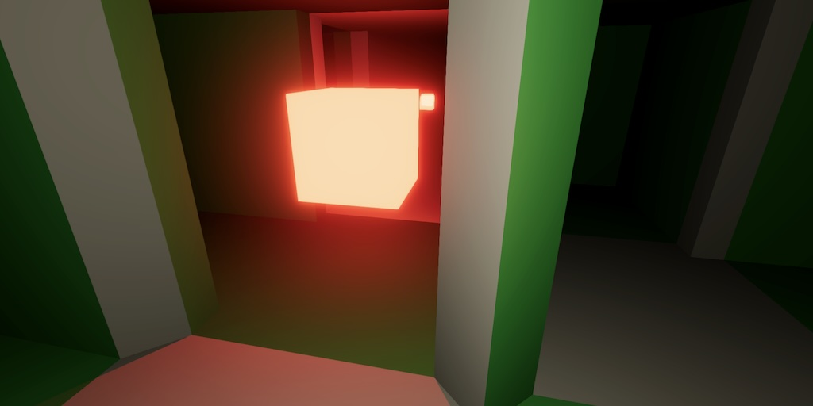
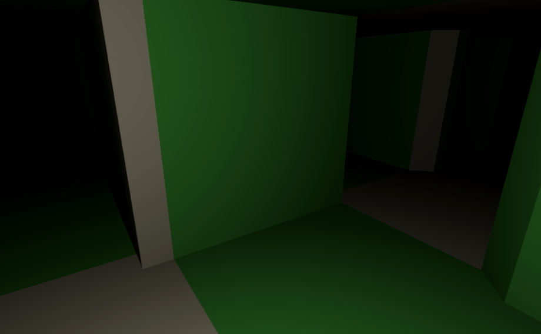

Maze 3.0.0
Building Cells

This tutorial is made with Unity 2022.3.43f1 and follows Maze 2.2.0.
Prefab Instance Pool
We're upgrading our project to major version 3, because we're making a significant change. But first we incorporate the PrefabInstancePool class into our project. It's an improved way to pool prefab instances that was introduced in game prototype tutorials that released after the original Maze 2 prototype.
We copy the class to our project verbatim. It supports hot reloading, which our project doesn't because it stores game state in native arrays, but we keep the functionality anyway.
using System.Collections.Generic;
using UnityEngine;
public struct PrefabInstancePool<T> where T : MonoBehaviour
{
Stack<T> pool;
public T GetInstance(T prefab)
{
if (pool == null)
{
pool = new();
}
#if UNITY_EDITOR
else if (pool.TryPeek(out T i) && !i)
{
// Instances destroyed, assuming due to exiting play mode.
pool.Clear();
}
#endif
if (pool.TryPop(out T instance))
{
instance.gameObject.SetActive(true);
}
else
{
instance = Object.Instantiate(prefab);
}
return instance;
}
public readonly void Recycle(T instance)
{
#if UNITY_EDITOR
if (pool == null)
{
// Pool lost, assuming due to hot reload.
Object.Destroy(instance.gameObject);
return;
}
#endif
pool.Push(instance);
instance.gameObject.SetActive(false);
}
}
Now we can use this pool in MazeCellObject, simplifying it a lot.
//using System.Collections.Generic;using UnityEngine; public class MazeCellObject : MonoBehaviour {//#if UNITY_EDITOR//…//#endif//[System.NonSerialized]PrefabInstancePool<MazeCellObject> pool; public MazeCellObject GetInstance() { MazeCellObject instance = pool.GetInstance(this); instance.pool = pool; return instance; } public void Recycle() { pool.Recycle(this); } }
Building Cells
The big change is that we're going to use a new approach to build maze cell visualizations. The prototype used unique prefabs for all possible cell configurations, but this is inflexible and doesn't scale well if we add more cell variety. Instead we will build cells on demand, using simpler prefab parts. This matches the approach used in the old Maze 1 tutorial.
Prefab Parts
Create prefabs for all cell parts that we need. First is the container cell object, which can be made by duplicating any of the existing prefabs and removing all its child objects. Second is a floor prefab, which can be made by duplicate the open X junction prefab and removing its ceiling. Create a prefab for the ceiling in the same way.
Do the same for a wall, making it a north wall. Note that prefab is then made such that when centered on a cell the wall is in the correct position. We also need a full corner, which is the square pillar in the northeast corner of a cell. And finally also a cut corner in the same place.
Give the renderers of these prefabs a different material to visually distinguish them from the old prefabs. I gave them a green color.
Cell Builder
To build a cell we introduce a new MazeCellBuilder scriptable object type, based on MazeVisualization. It needs the same rotations array and a BuildCell method with a maze and a cell index as parameters, returning a cell object. Give it configuration fields for the six prefabs that we need.
BuildCell starts with getting a cell instance, settings its position, and returning it. We won't rotate it. Keep track of its Transform and MazeFlags with local variables as we'll use them when filling the cell with parts.
using UnityEngine;
[CreateAssetMenu]
public class MazeCellBuilder : ScriptableObject
{
static readonly Quaternion[] rotations =
{
Quaternion.identity,
Quaternion.Euler(0f, 90f, 0f),
Quaternion.Euler(0f, 180f, 0f),
Quaternion.Euler(0f, 270f, 0f)
};
[SerializeField]
MazeCellObject
cell, floor, ceiling, wall, cornerCut, cornerFull;
public MazeCellObject BuildCell(Maze maze, int cellIndex)
{
MazeCellObject instance = cell.GetInstance();
Transform t = instance.transform;
t.localPosition = maze.IndexToWorldPosition(cellIndex);
MazeFlags f = maze[cellIndex];
return instance;
}
}
The floor and ceiling are easy to add. Get instances of them and make the cell their parent, without changing their local position.
MazeFlags f = maze[cellIndex]; floor.GetInstance().transform.SetParent(t, false); ceiling.GetInstance().transform.SetParent(t, false);
Next, check whether we need to place a wall in each direction and store this data in boolean variables, as we'll refer to it more than once. A wall is needed if there isn't a passage.
ceiling.GetInstance().transform.SetParent(t, false); bool wallN = f.HasNot(MazeFlags.PassageN); bool wallE = f.HasNot(MazeFlags.PassageE); bool wallS = f.HasNot(MazeFlags.PassageS); bool wallW = f.HasNot(MazeFlags.PassageW);
To build a wall we have to get an instance of it, set its rotation, and set its parent without changing its position. Create a convenient method for this, with the parent and rotation as parameters.
void BuildWall(Transform parent, int rotation)
{
MazeCellObject w = wall.GetInstance();
w.transform.localRotation = rotations[rotation];
w.transform.SetParent(parent, false);
}
Use that method to build the necessary walls in BuildCell.
bool wallW = f.HasNot(MazeFlags.PassageW);
if (wallN)
{
BuildWall(t, 0);
}
if (wallE)
{
BuildWall(t, 1);
}
if (wallS)
{
BuildWall(t, 2);
}
if (wallW)
{
BuildWall(t, 3);
}
Also create a BuildCorner method that does the same as BuildWall, except that it also has a parameter to indicate whether the corner is cut, which it uses to get an instance of the appropriate prefab.
void BuildCorner(Transform parent, int rotation, bool cut)
{
MazeCellObject c = (cut ? cornerCut : cornerFull).GetInstance();
c.transform.localRotation = rotations[rotation];
c.transform.SetParent(parent, false);
}
Use that method to build the necessary corners in BuildCell. A corner needs to be built only when none of its adjacent walls exist and there isn't a diagonal passage through it either.
if (wallW)
{
BuildWall(t, 3);
}
bool cut = f.Has(MazeFlags.CutCorners);
if (!(wallN || wallE || f.Has(MazeFlags.PassageNE)))
{
BuildCorner(t, 0, cut);
}
if (!(wallE || wallS || f.Has(MazeFlags.PassageSE)))
{
BuildCorner(t, 1, cut);
}
if (!(wallS || wallW || f.Has(MazeFlags.PassageSW)))
{
BuildCorner(t, 2, cut);
}
if (!(wallW || wallN || f.Has(MazeFlags.PassageNW)))
{
BuildCorner(t, 3, cut);
}
Create a new cell builder via the asset menu and hook up its prefabs.
Note that with this new approach it's possible to build a cell that has four walls, which wasn't possible earlier. This isn't useful, but shows that the new approach is more flexible.
Mixing Approaches
Add a configuration field for a cell builder to Game and hook up our new asset.
[SerializeField] MazeCellBuilder cellBuilder;
To verify that both approaches should produce visually identical results and are interchangeable we will initially use both together, randomly picking one of them for each cell. Adjust the cell-creation loop in StartNewGame to do this based on a random value.
for (int i = 0; i < maze.Length; i++)
{
if (Random.value < 0.5f)
{
cellObjects[i] = cellBuilder.BuildCell(maze, i);
}
else
{
cellObjects[i] = (maze[i].Has(MazeFlags.CutCorners) ?
visualizationCutCorners :
visualizationFullCorners).Visualize(maze, i);
}
}

Because I made the new parts green I get mazes that contain a mix of white and green cells.
Note that the new approach is slightly less efficient because there are more cases where floors, ceilings, and walls extend outside the visible space. This can be seen via the scene window. However, this shouldn't result in noticeable performance degradation.
Recycling Parts
Although everything might appear to work correctly at this point, it goes wrong if a new game is started after the first win or loss during the same play session. Incorrect walls will start showing up. This happens because we're reusing cells without clearing them.
Besides recycling the root cell objects we also have to recycle their parts. We do this by looping through all game object children in MazeCellObject.Recycle and recycling each child that has a MazeCellObject component. To fully clean up the cells we should also detach the parts from them by setting their parent to null, again making sure to not adjust their local position. To keep the loop working while removing children we have to iterate through the children backwards.
public void Recycle()
{
Transform t = transform;
for (int i = t.childCount - 1; i >= 0; i--)
{
var child = t.GetChild(i).GetComponent<MazeCellObject>();
if (child)
{
child.transform.SetParent(null, false);
child.Recycle();
}
}
pool.Recycle(this);
}
Now everything gets correctly recycled when a new game starts.
Note that not only the root cell object recycles its children, this behavior applies to all parts. This isn't useful at this point, but it allows us to add sub-parts in the future that will also get recycled correctly.
Removing old Visualization
Once we've observed that the new approach works correctly and is functionally identical to the old one we only have to keep the new approach. Remove the choice in Game.StartNewGame, only keeping the cell builder.
for (int i = 0; i < maze.Length; i++)
{
// if (Random.value < 0.5f)
// {
cellObjects[i] = cellBuilder.BuildCell(maze, i);
// }
// else { … }
}
Also remove the two MazeVisualization fields.
//[SerializeField]//MazeVisualization visualizationCutCorners, visualizationFullCorners;
Then remove the corresponding visualization assets, the MazeVisualization script, and all old prefabs and their material. Finally, adjust the material used by our parts so our maze will be white again.
The next tutorial is Maze 4.0.0.